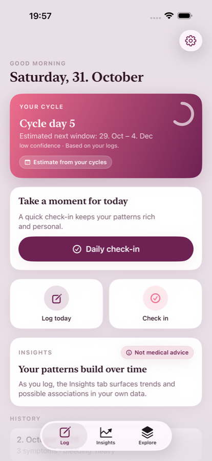
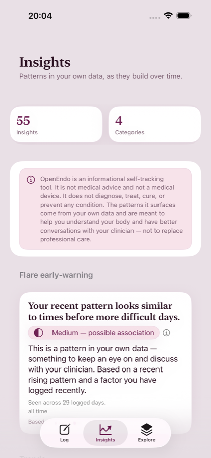
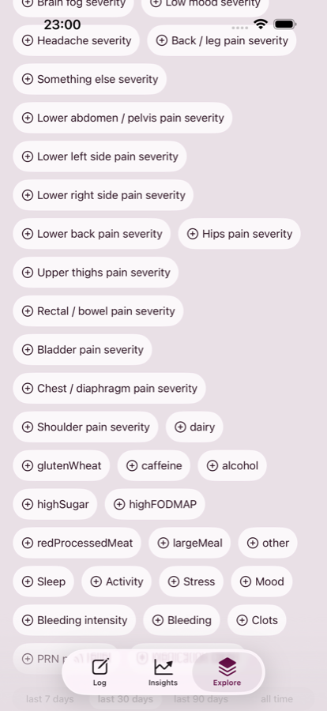
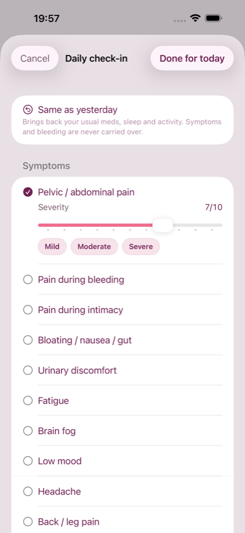
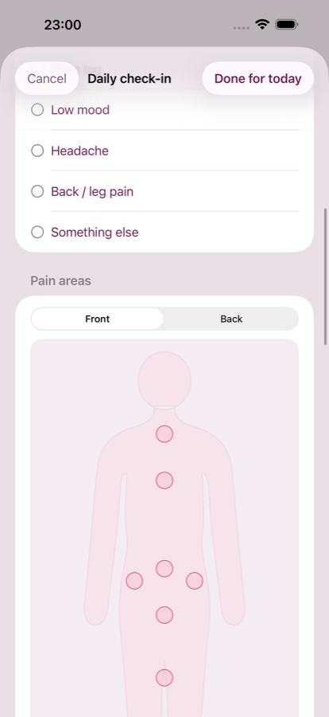
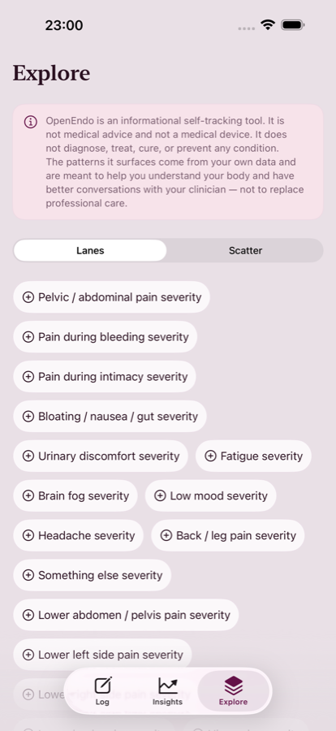
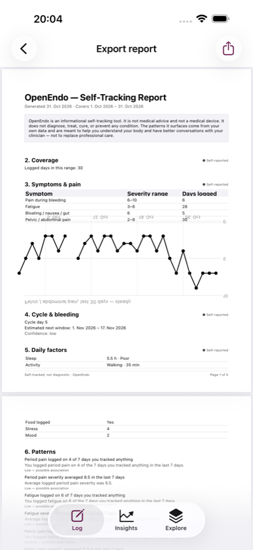

Free · Open source · No account
A quieter way to keep track of endo.
Log your day in under a minute, see what moves together in your own logs, and take a clean report to your next appointment. Everything stays on your device.



How it works
Five taps a day. That is the whole routine.
OpenEndo is built around one short check-in, not around filling in forms. Symptoms are optional; confirming the day is enough.
Check in once a day
Pain, bleeding, gut, energy, sleep, mood, meds, stress — each on its own row, each skippable. A day with nothing logged still counts.
See what moves together
Insights compare the days you actually logged and show where two things moved in the same direction — with the number of days behind each card, so you can judge it yourself.
Explore any two signals
Lanes and a scatter view let you look at one symptom against another across weeks, without a dashboard full of numbers you did not ask for.
Hand over a report
Pick a date range and export a PDF with your logged days, coverage and the patterns that held. Something to put on the table at an appointment.
Screens
Every screenshot here is the shipping app.
Captured from the real build with demo data by an automated UI test — not a mockup, not a redesign.




Privacy
There is no server to send your data to.
No account, no backend, no analytics SDK, no advertising identifier. The app is a local database and a set of views over it.
- Data lives in the app's own store on your phone
- Backups go through your own iCloud or Android backup, if you use one
- Nothing is sent anywhere, so nothing can be sold or leaked
- You can read the privacy policy — and the code that implements it
“Tracking is the one thing I can actually do between appointments. I wanted a tool that stops asking for an account and starts showing me what I already wrote down.” Why OpenEndo exists
Open source
MIT licensed, and small enough to read.
Two native apps — SwiftUI on iOS, Kotlin and Compose on Android — sharing one frozen claims-policy dataset so the copy cannot drift between platforms.